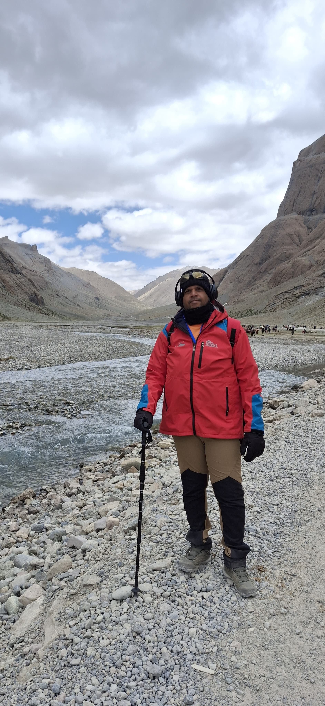
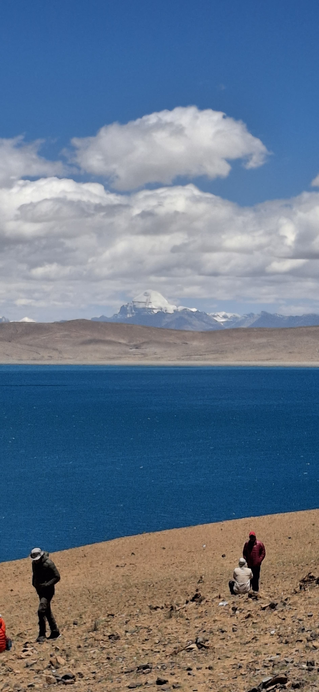
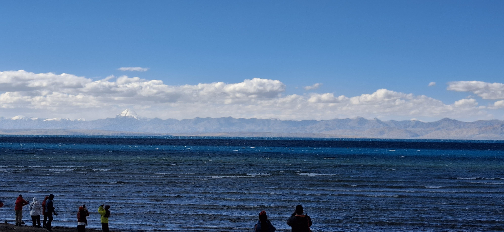
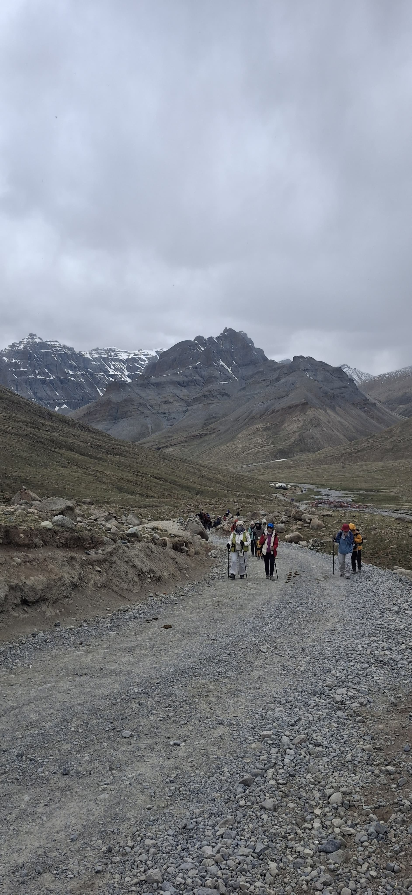
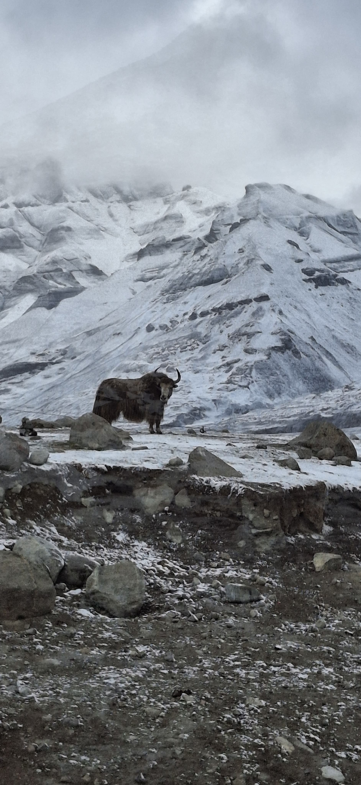
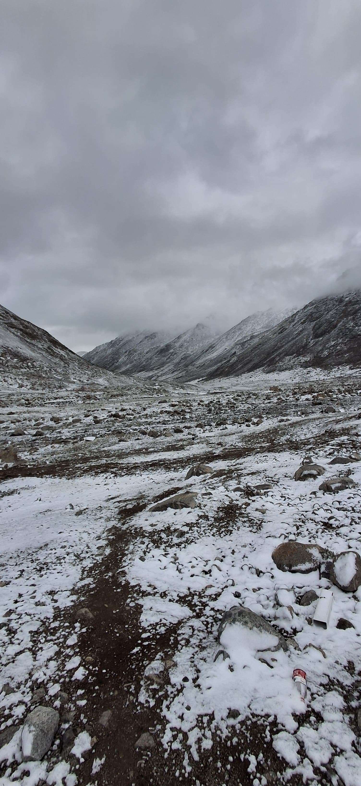
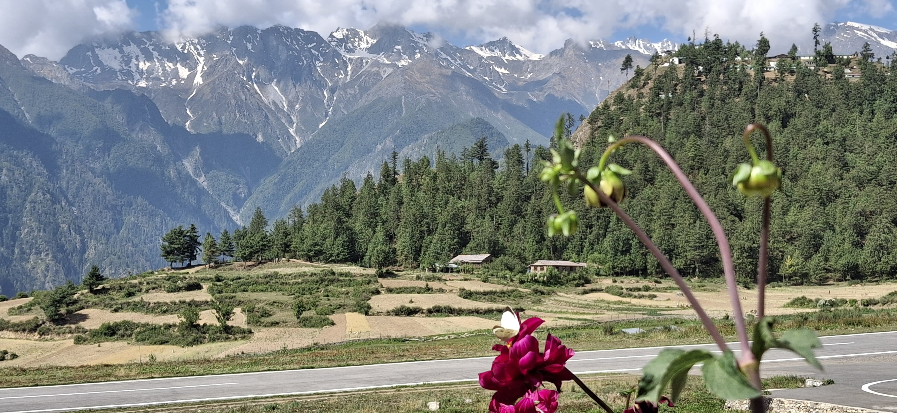

Kailash Mansarovar
The abode of Shiva — where the journey turns inward
The one that changed everything. Mount Kailash — the abode of Shiva and the most sacred peak in the Himalaya — is not a mountain you conquer; it is a pilgrimage that quietly undoes you. From the turquoise stillness of Lake Mansarovar to the sheer, snow-streaked faces of the mountain itself, every step of the parikrama was walked in silence and awe. Weather turned our group back before the 5,636m Dolma La pass — and yet, standing beneath Kailash, I felt nothing missing. Only a stillness I had never known before. This was not a destination. It was an arrival.






